THE PLAY COLLECTION / 自製遊戲
把一個靈感，
變成一場遊戲。
從演算法裡的小島，到霓虹夜色中的生存挑戰。
這裡收藏我的遊戲作品，以及每個作品背後的想法。
探索遊戲 ↓遊戲作品 Game collection
01 — 20
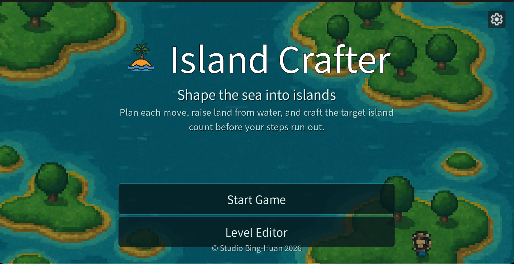
演算法 × 島嶼解謎
Island Crafter 造島小匠 / Islands Crafter
如果 LeetCode 的一道題目，可以變成一款遊戲？
詳細介紹與連結
挑戰第 200 題「Number of Islands」時，我開始想像：讓玩家親手生成島嶼，會是什麼樣的體驗？於是，把計算島嶼數量的演算法放進關卡裡，將原本枯燥的練習，轉化為充滿互動與趣味的解謎。
遊戲示範影片
開發筆記 / BH_Lin ·
邏輯解謎 × 九個冒險世界
ALGO ARCADE 演算法遊樂場
把思考，變成一場冒險。不必會寫程式，只要願意試一試。
詳細介紹與連結
在火場中找到生路，在地城裡做出選擇。九個各具特色的世界，將演算法的靈感化為救援、推箱、接線與尋寶等邏輯挑戰，用下一步揭開答案。
81 道關卡、243 顆星星，從看懂規則到找到更好的解法，依照自己的步調探索每個世界。
九個世界 · 81 道挑戰 · 敬請期待
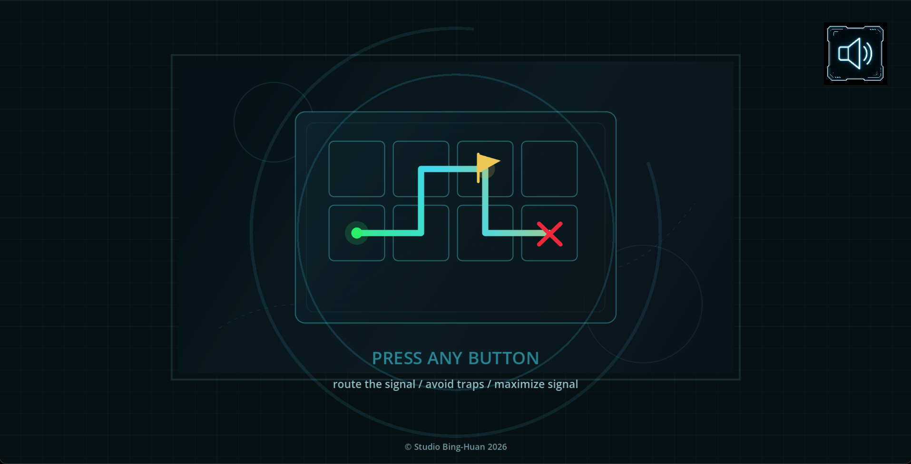
一條訊號路線，一場與時間的競賽。
詳細介紹與連結
以科幻駭入風格呈現的網格解謎遊戲。玩家需要在限時內把訊號從 START 導向 END，一邊閃避陷阱與雷射，一邊規劃更有效率的路線，讓邏輯思考化為可親手操作的挑戰。
遊戲示範影片
開發筆記 / BH_Lin ·
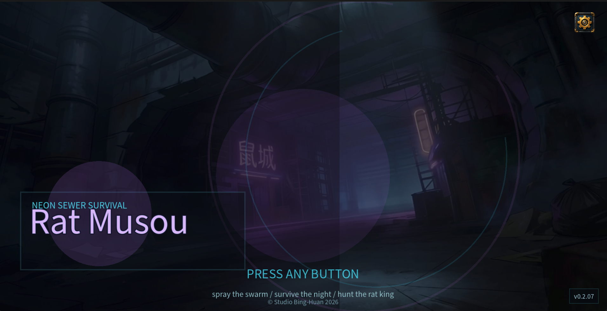
俯視角動作 × 滅鼠生存
Rat Musou 老鼠無雙
背上藥劑罐，迎戰四面八方的鼠群。
詳細介紹與連結
扮演滅鼠員，在場地中噴灑藥劑、收集金幣並累積經驗升級。每 3 級迎戰一隻 BOSS；擊敗牠後搭乘直昇機前往商店補血，再準備迎接下一波。
開發筆記 / BH_Lin ·
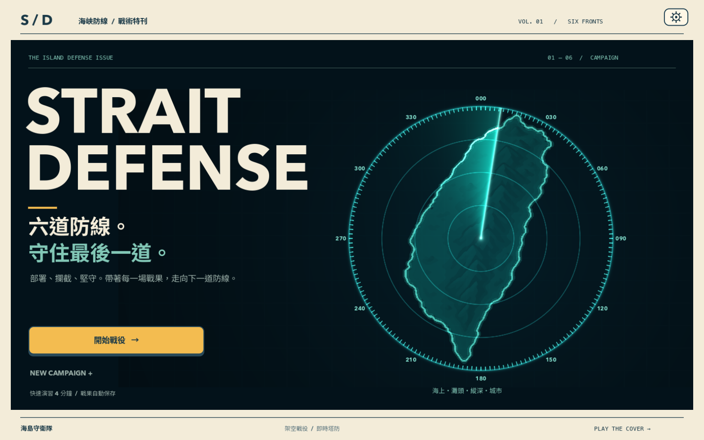
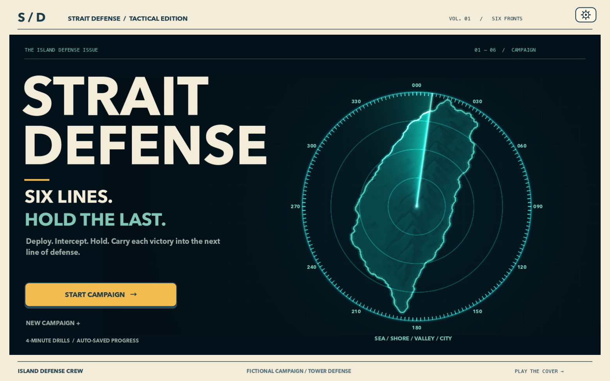
架空戰役 × 即時塔防
STRAIT DEFENSE 海峽防線
六道防線，守住最後一道。帶著每一場戰果，走向下一道防線。
詳細介紹
一款以海島防衛為主題的即時塔防遊戲。六個關卡串起海上、灘頭、內陸與城市戰場，在不同地形與威脅之間，體驗逐步推進的架空防衛戰役。
從艦艇、戰機到地面部隊，結合雷達、海搜與聲納的偵測差異，以及武器射程與目標類型的搭配，呈現多層次的防線部署。最終關卡以總統府為防守地標，迎接城市防衛的最後考驗。
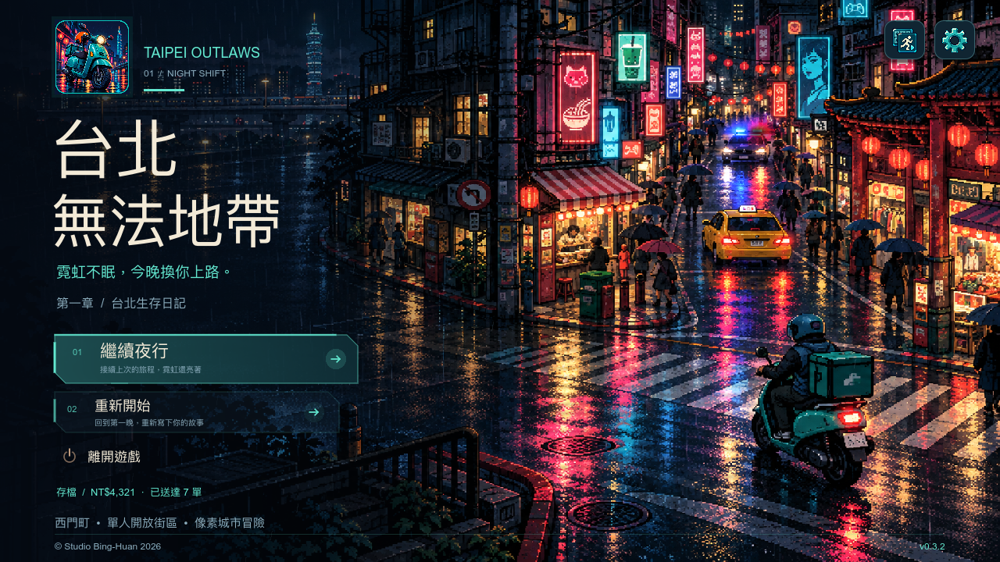
像素城市 × 劇情冒險
Taipei Outlaws 台北無法地帶
一台借來的機車，一場台北雨夜裡的外送，走進街坊為自己發聲的故事。
詳細介紹
以台北為靈感的單人離線城市冒險。小白帶著 NT$3,000，在霓虹街頭接單、送貨、存錢買車，卻因一份記憶卡與一通不實報案，捲入街區背後的真相。
三章故事結合角色立繪對話、證據查證與公開具名或匿名的選擇。步行或騎機車探索夜市、公園、廟埕與河岸，感受車流、居民與晴雨變化；結局後仍可自由接單與探索。
單人冒險 · 繁體中文 / English · 支援鍵盤與手把
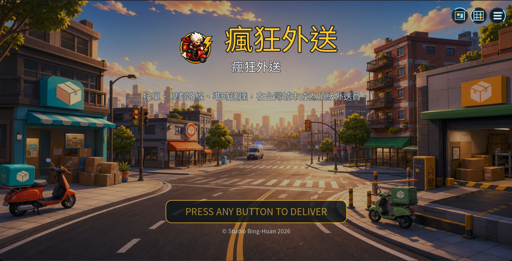
街機外送 × 城市冒險
瘋狂外送 Crazy Delivery
熱騰騰的餐點、忙碌的街道，每一次外送都是新的冒險。
詳細介紹與連結
一款俯視角 2D 街機外送遊戲。在車流、突發障礙與時間壓力之間穿梭，兼顧送達速度與餐點完整度，把每一趟外送的收入化為下一次車輛升級。
市中心、夜市、工業區、住宅區、港口與山路，六個各具特色的區域，帶來不同的街道風景與外送故事。
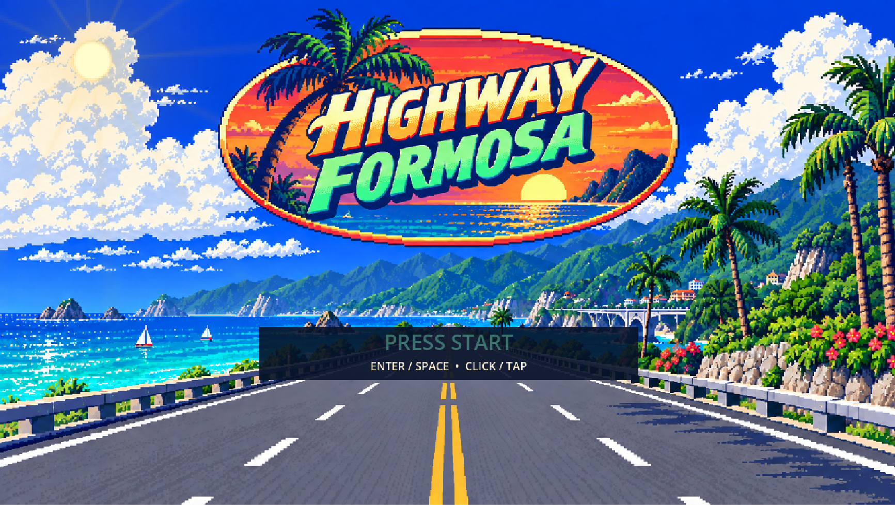
台灣風景 × 街機競速
Highway Formosa
一台紅色敞篷車，從海風到霓虹，開出屬於自己的公路故事。
詳細介紹與連結
以台灣為靈感的單人街機賽車遊戲，結合限時競速、車流閃避與公路頭目追逐。沿途收集氮氣、穿越檢查點，在速度與風景之間找到自己的節奏。
從東海岸、山路、台北市、夜市、賽博福爾摩沙到縱谷，六個場景各有專屬頭目。旅程由六個關卡組成，並可在檢查點選擇下一條路線，展開不同的島嶼冒險。
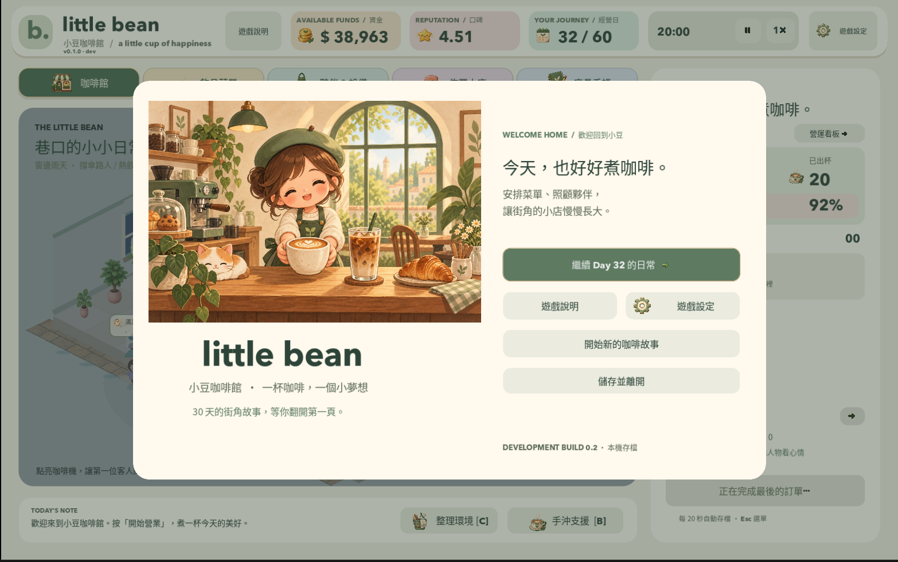
咖啡館經營 × 悠閒日常
little bean 小豆咖啡館
一杯咖啡，一個小夢想。把街角的小店，經營成你喜歡的模樣。
詳細介紹與連結
一款可愛等角視角的單人咖啡館經營遊戲。從迎接第一位客人開始，與夥伴一起累積小店的日常，將每杯咖啡的收入變成新設備、舒適的家具，以及下一個值得期待的早晨。
18 款飲品逐步解鎖，從菜單到擺設，慢慢打造自己的風格。用 30 天寫下第一段咖啡故事，故事結束後也能繼續營業，依照自己的步調陪伴小店成長。
單人經營 · 繁體中文 / English
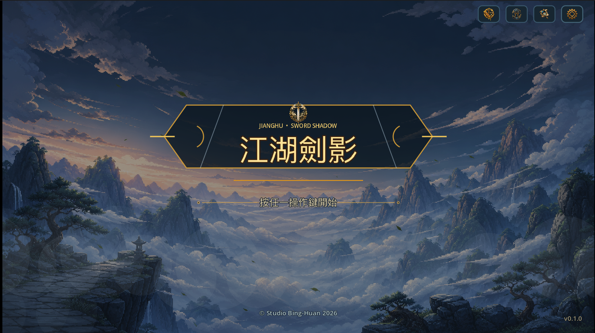
江湖劍影
武俠像素風格的移動原型。玩家可操控男主角許凌風，在清風武館的庭院中自由探索。
Gold Coast 黃金海岸救生隊
以澳洲黃金海岸為靈感的 2D 救生員遊戲。在每回合三分鐘的挑戰中，救援泳客、應對海流，並妥善分配體力。
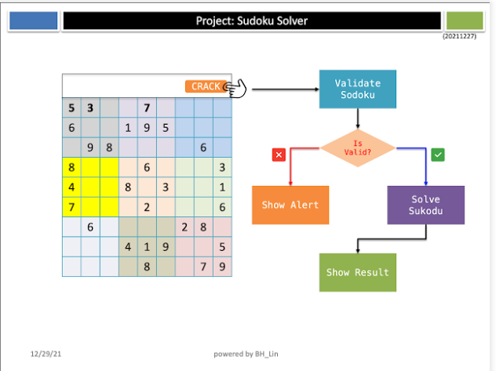
把 LeetCode 裡的數獨演算法，變成看得見、用得到的網頁作品。
詳細介紹與連結
練習 LeetCode 第 37 題「Sudoku Solver」與第 36 題「Valid Sudoku」時，我開始思考如何讓解題程式有實際用途，於是為演算法加上圖形介面，做成這個數獨網頁作品。
結合自訂數獨題目、題目驗證與自動求解，讓抽象的程式邏輯轉化成直覺的視覺體驗。
開發筆記 / BH_Lin ·
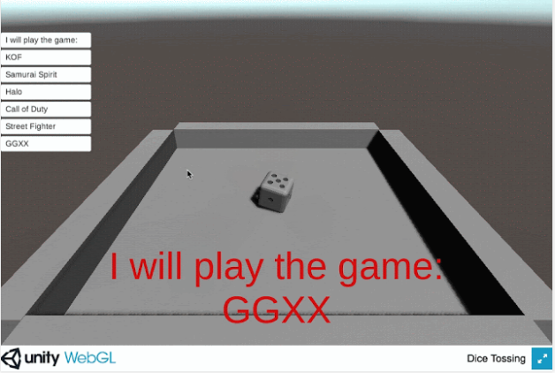
Unity · 隨機決策
Dice Tossing in 3D
把難以決定的選項，交給一顆真正會滾動的骰子。
詳細介紹與連結
靈感來自同事用命令列工具擲骰子做決定，於是我用 Unity 製作了這個 3D 版本。使用者可以輸入前綴文字與候選項目，再讓骰子決定結果。
開發筆記 / BH_Lin ·
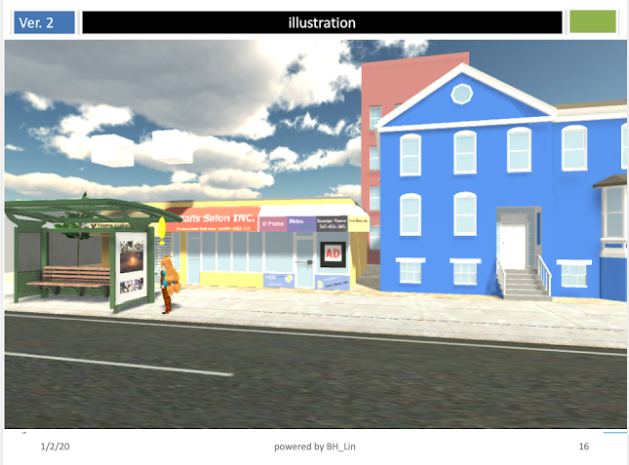
Unity · 場景實驗
Advertise in 3D
探索廣告融入 3D 遊戲場景的可能性。
詳細介紹與連結
以 Unity 3D 搭建街景，結合自製廣告下發後台，把廣告呈現在公車候車亭與超市牆面。玩家走進場景就能看到廣告，讓廣告成為遊戲環境的一部分。
開發筆記 / BH_Lin ·
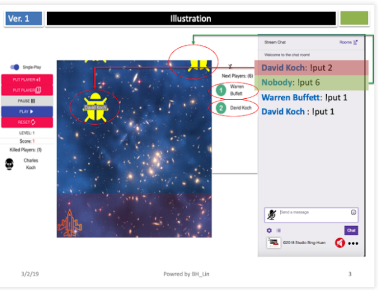
實況主守住防線，觀眾決定敵人何時來襲。
詳細介紹與連結
實況主操控戰機，擊落敵人並阻止牠們突破防線；觀眾可以投入外星敵人進攻。若觀眾放入的敵人成功入侵，該觀眾便獲勝。也提供單人模式。
開發筆記 / BH_Lin ·
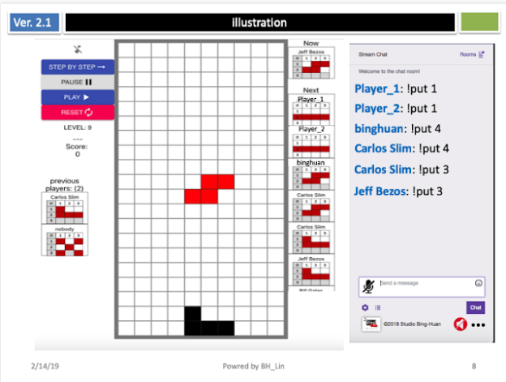
下一個方塊，由觀眾決定。
詳細介紹與連結
實況主負責操作，觀眾選擇接下來出現的方塊形狀。若某位觀眾提供的方塊導致遊戲結束，該觀眾便獲勝。也提供單人模式。
開發筆記 / BH_Lin ·
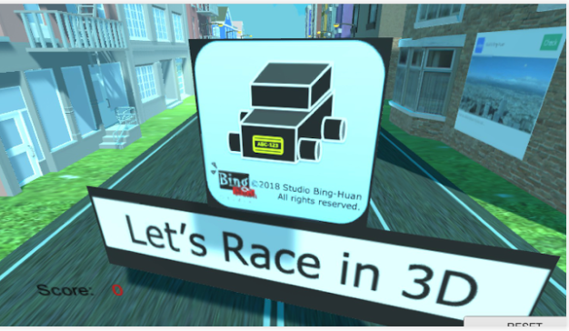
Unity · 實況互動
Let’s Race in 3D
把實況互動帶進 3D，這次由殭屍閃避車輛。
詳細介紹與連結
這是我第一個使用 Unity 開發的遊戲。實況主操控殭屍閃避，觀眾則可把車輛投入遊戲，嘗試撞擊實況主控制的角色。
開發筆記 / BH_Lin ·
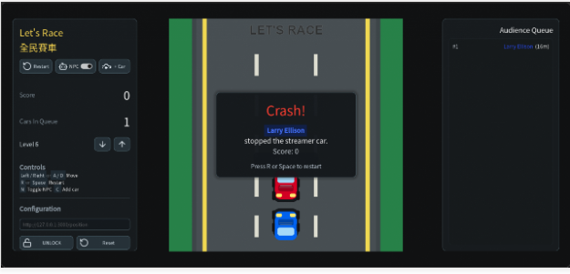
實況互動 · 賽車
Let’s Race（全民賽車）
一人掌握方向，觀眾製造路上的挑戰。
詳細介紹與連結
實況主操控車子閃避，觀眾將車輛投入遊戲，阻擋實況主前進。從早期的實況互動版本，到後續的全民賽車介面，持續探索一起玩的可能性。
開發筆記 / BH_Lin ·
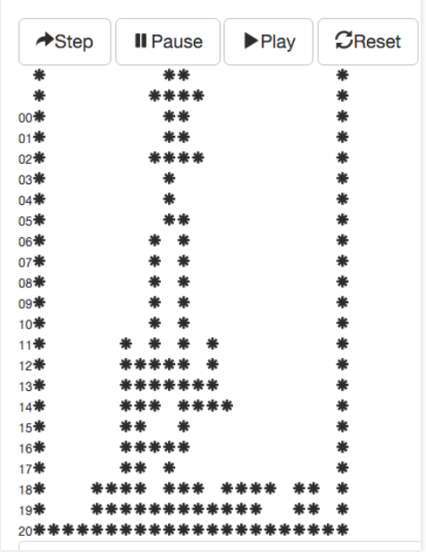
第一款遊戲 Web App，從俄羅斯方塊開始。
詳細介紹與連結
一次 coding quest 帶來的挑戰，讓我花了一天完成初版。從簡單的示範版本出發，嘗試在網頁裡實作熟悉的方塊遊戲。
開發筆記 / BH_Lin ·
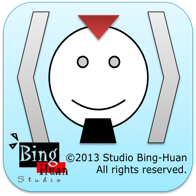
Web · 團隊派對
Charade（猜字謎遊戲板）
讓題目準備更簡單，把舞台交給比手畫腳的人。
詳細介紹與連結
主持人可事先設定題目清單，再透過網頁呈現與翻頁。適合團隊活動、朋友聚會：一人用肢體表演題目，其他人負責猜答案。
開發筆記 / BH_Lin ·